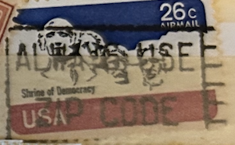
| SOURCE | TITLE| IMAGE MATCH | click to source page |
| Historical Autographs Gallery | 1961 President John F. Kennedy Inauguration Ticket PSA Pop 1 - WH VIP – H.A.G. | 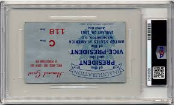 |
| IndiaMART | Paper USA stamp at ₹ 100000/piece in Ghaziabad | ID: 23312665273 | 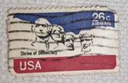 |
| Todocolección | sello usado estados unidos 26 c - shrine of dem - Acheter Timbres anciens des États-Unis sur todocoleccion | 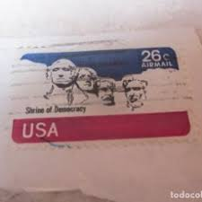 |
| eBay | MATTED UNUSED U.S. 1974 POSTAGE STAMP FOR MT. RUSHMORE SOUTH DAKOTA | eBay | 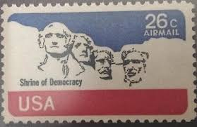 |
| CGTN | Trashing democracy - CGTN | 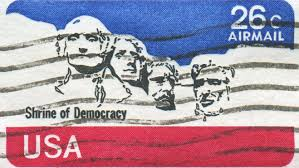 |
| eBay | United States - Mt Rushmore National Memorial 26c 1974 Sg:US A1522 | eBay | 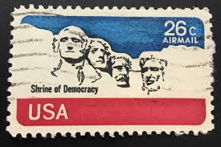 |
| TheArticle | A brief history of US elections | TheArticle | 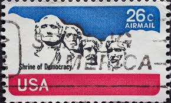 |
| Shutterstock | Airmail Usa: Over 1,948 Royalty-Free Licensable Stock Photos | Shutterstock | 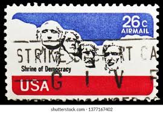 |
| Shutterstock | Collections by Janaka Dharmasena | Shutterstock Contributor | 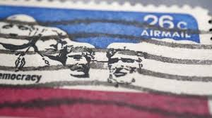 |
| Dreamstime.com | Vintage Mount Rushmore Stock Photos - Free & Royalty-Free Stock Photos from Dreamstime | 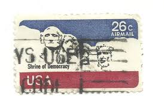 |
| Dreamstime.com | Monument Rushmore National Memorial, Airmail 1974-1976 Serie, Circa 1974 Editorial Stock Photo - Image of philatelic, philately: 145575318 | 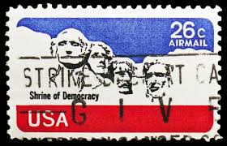 |
| Bigstock | Fukuoka, Japan-October Image & Photo (Free Trial) | Bigstock | 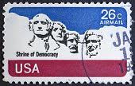 |
| iStock | Ernest Shackleton Stamp Stock Photo - Download Image Now - Ernest Shackleton, Postage Stamp, Mail - iStock | 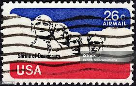 |
| Shutterstock | 9+ Hundred Lincoln Stamp Royalty-Free Images, Stock Photos & Pictures | Shutterstock | 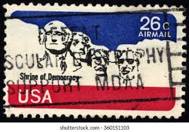 |
| Dreamstime.com | 1974 USA 26c Mount Rushmore MNH Stamp Editorial Stock Image - Image of textile, text: 422175969 | 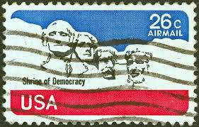 |
| iStock | Usa Presidents Stamp Stock Photo - Download Image Now - George Washington, Abraham Lincoln, Air Mail - iStock | 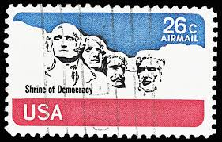 |
| iStock | Postage Stamps Stock Photo - Download Image Now - Above, Antique, Black Background - iStock | 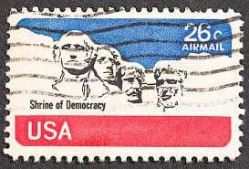 |
| Shutterstock | Usa Stamp No Circa Date Stamp Stock Photo 1515651704 | Shutterstock | 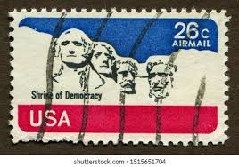 |
| eBay | C88, Huge Design Shift & Misperfed Major Error Airmail Stamp Mint Never Hinged | eBay | 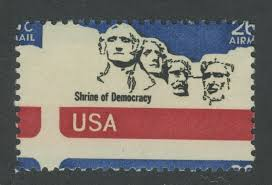 |
| iStock | Shrine Of Democracy Stock Photo - Download Image Now - Abraham Lincoln, Air Mail, American Culture - iStock | 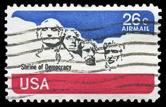 |
| iStock | 10+ 1965 1938 Stock Photos, Pictures & Royalty-Free Images - iStock | 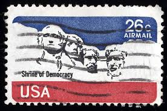 |
| Shutterstock | 4+ Hundred Shrine Democracy Royalty-Free Images, Stock Photos & Pictures | Shutterstock | 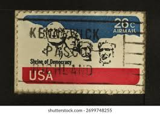 |
| BidCurios | USA - Used Stamp - Airmail - Shrine of Democracy - (B-002/K3)b - BidCurios | 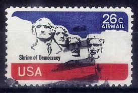 |
| iStock | Mount Rushmore Commemorative Stamp Stock Photo - Download Image Now - Air Mail, Color Image, Democracy - iStock | 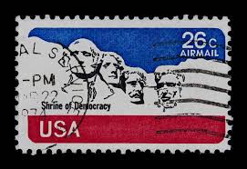 |
| Barry S. Slosberg Auctions | Lot - 4 Nixon Inauguration Tickets | 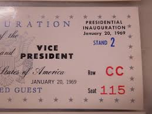 |
| Shutterstock | United States Postal Stamps: Over 17,646 Royalty-Free Licensable Stock Photos | Shutterstock | 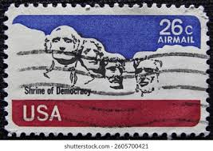 |
| Todocolección | estados unidos 1960. credo americano. francis s - Buy Antique stamps of United States on todocoleccion | 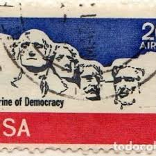 |
| Shutterstock | 2+ Hundred Shrine Usa Democracy Royalty-Free Images, Stock Photos & Pictures | Shutterstock | 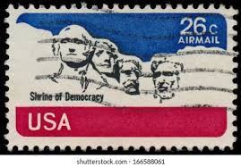 |
| eBay | USA 1974, SHRINE OF DEMOCRACY, Sc #C88, 26-Cent MINT Airmail, Single Stamp, MNH! | eBay | 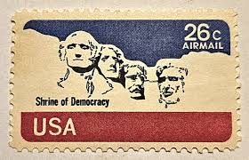 |
| iStock | Mount Rushmore Stamp Stock Photo - Download Image Now - Abraham Lincoln, Black Background, Black Hills - iStock | 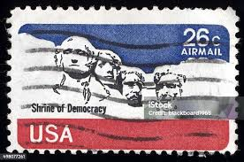 |
| eBay | 1985 Ronald Reagan Inaugural & Election Day Event Cover Faust HP Cachet 08814 | eBay | 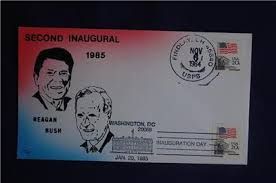 |
| eBay UK | USA Stamp Shrine of Democracy Airmail 26 Cents United States Postage | eBay UK | 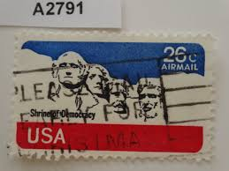 |
| Shutterstock | 112+ Thousand Perforated Stamp Royalty-Free Images, Stock Photos & Pictures | Shutterstock | 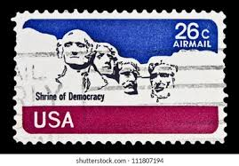 |
| Shutterstock | 9+ Hundred Us Airmail Royalty-Free Images, Stock Photos & Pictures | Shutterstock | 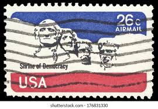 |
| iStock | Post Stamp Of Four Presidents On Black Paper Stock Photo - Download Image Now - Mt Rushmore National Monument, Abraham Lincoln, Air Mail - iStock | 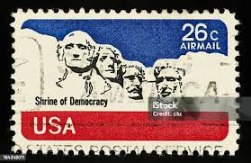 |
| Beverly Hills Swap Meet | President John F. Kennedy (PSA) 1961 Inaugural (Honored Guest) Ticket JFK – Beverly Hills Swap Meet | 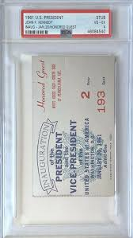 |
| eBay | USA Air Mail Shrine of Democracy Stamp. Used. 26 cents. 1974 4 off very good see | eBay | 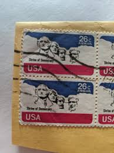 |
| Threads | Sigourney Weaver photographed by Helmut Newton on the set of Alien 3 | 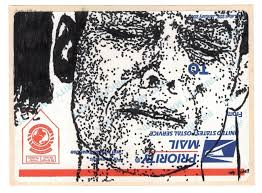 |
| The Fountain Pen Network | Signature Pen - Page 9 - Fountain & Dip Pens - First Stop - The Fountain Pen Network | 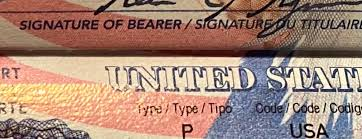 |
| eBay | STAMPS US SCOTT C88 "Mt. Rushmore" 26 CENT 1974 USED PAIR | eBay | 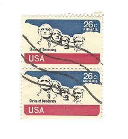 |
| iStock | Stamp Of Phillip Mazzei Stock Photo - Download Image Now - 1967, Air Mail, Airplane - iStock | 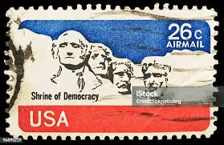 |
| eBay | USA 1986 STATUE OF LIBERTY CENTENNIAL SOUVENIR CARD - STAINED | eBay | 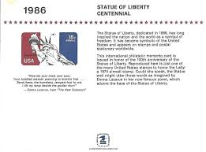 |
| eBay | USA Air Mail Shrine of Democracy Stamp. Used. 26 cents. 1974 4 off very good see | eBay | 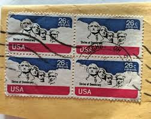 |
| Todocolección | sello usado estados unidos 26 c - shrine of dem - Buy Antique stamps of United States on todocoleccion | 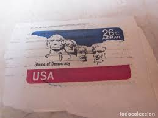 |
| eBay | 1985 Reagan & Bush Inaugural Event Cover Faust HP Cachet S#1334 08880 Washington | eBay | 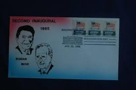 |
| Alamy | Tree of liberty, america Cut Out Stock Images & Pictures - Alamy | 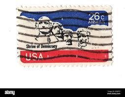 |
| My ID card : r/Mouthwashing | 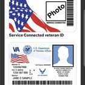 | |
| eBay | Scott Stamp # C88 (26c), MOUNT RUSHMORE, Single with Plate # 34875, MNH OG | eBay | 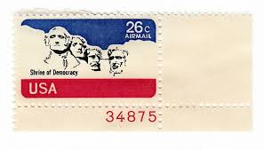 |
| Dreamstime.com | 8,246 Usa Mail Postage Stock Photos - Free & Royalty-Free Stock Photos from Dreamstime | 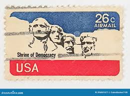 |
| latourlaw.com | EB-5 Immigrant Investor Permanent Residency | |
| Global Conference Alliance | How to Change a Tourist Visa to a Permanent Resident in USA? | |
| eBay | Scott # C-88...26 Cent....Mount Rushmore...2 Stamps | eBay | |
| Alamy | February 1974 hi-res stock photography and images - Page 2 - Alamy | |
| iStock | Postage Stamp Stock Photo - Download Image Now - Air Mail, American Culture, Antique - iStock | |
| Verbal Approval during Interview! Questions/Advice : r/USCIS | ||
| eBay UK | United States 1974 Mount Rushmoure 26c Fine Used A1622 VGC | eBay UK | |
| eBay | US Stamp Scott# C88 Mt. Rushmore 1974 MNH Stock Picture H206 | eBay | |
| ebid.net | USA 1974 Air Mail, Mt. Rushmore — Shrine of Democracy, 26c, Scott C88, MNH on eBid United Kingdom | 185385708 | |
| Shutterstock | 556 Jorge Del Busto Royalty-Free Images, Stock Photos & Pictures | Shutterstock | |
| eBay | USA, SCOTT # C88, USED LOT OF 100 MOUNT RUSHMORE 26¢ AIRMAIL, VERY GOOD QUALITY | eBay |